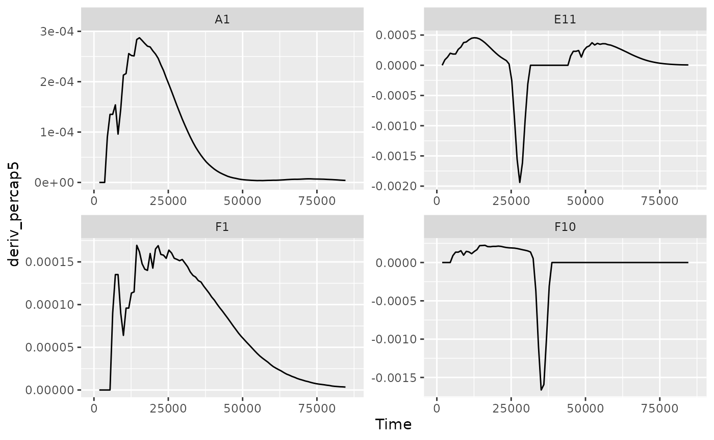
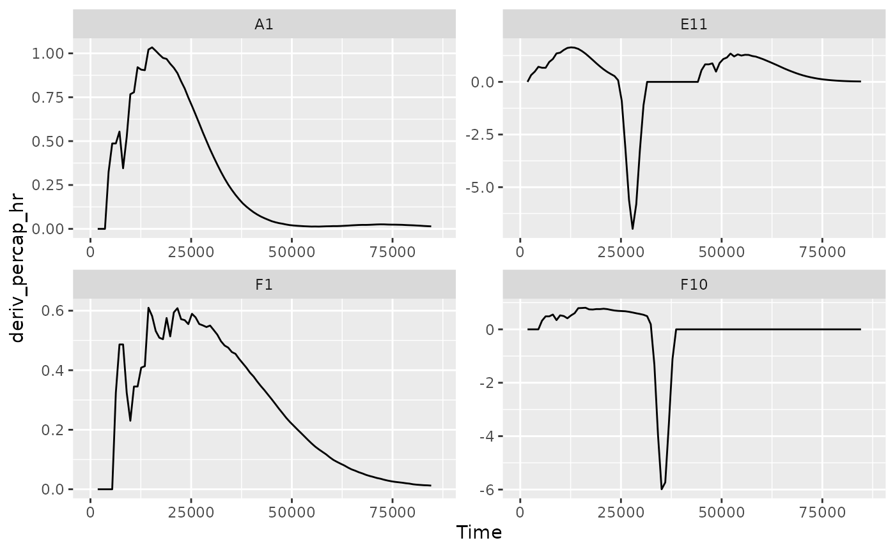

Where are we so far?
- Introduction:
vignette("gcplyr") - Importing and transforming data:
vignette("import_transform") - Incorporating design information:
vignette("incorporate_designs") - Pre-processing and plotting your data:
vignette("preprocess_plot") -
Processing your data:
vignette("process") - Analyzing your data:
vignette("analyze") - Dealing with noise:
vignette("noise") - Statistics, merging other data, and other resources:
vignette("conclusion")
So far, we’ve imported and transformed our measures, combined them with our design information, and pre-processed and plotted our data. Now we’re going to do some processing of our raw data: calculating derivatives.
If you haven’t already, load the necessary packages.
library(gcplyr)
#> ##
#> ## gcplyr (Version 1.1.0, Build Date: 2023-02-02)
#> ## See http://github.com/mikeblazanin/gcplyr for additional documentation
#> ## Please cite software as:
#> ## Blazanin, Michael. 2023. 'gcplyr: manipulate and analyze growth
#> ## curve data.' R package version 1.1.0
#> ##
library(dplyr)
#>
#> Attaching package: 'dplyr'
#> The following objects are masked from 'package:stats':
#>
#> filter, lag
#> The following objects are masked from 'package:base':
#>
#> intersect, setdiff, setequal, union
library(ggplot2)
#This code was previously explained
#Here we're re-running it so it's available for us to work with
example_tidydata <- trans_wide_to_tidy(example_widedata_noiseless,
id_cols = "Time")
example_design <- make_design(
pattern_split = ",", nrows = 8, ncols = 12,
"Bacteria_strain" = make_designpattern(
values = paste("Strain", 1:48),
rows = 1:8, cols = 1:6, pattern = 1:48, byrow = TRUE),
"Bacteria_strain" = make_designpattern(
values = paste("Strain", 1:48),
rows = 1:8, cols = 7:12, pattern = 1:48, byrow = TRUE),
"Phage" = make_designpattern(
values = c("No Phage"), rows = 1:8, cols = 1:6, pattern = "1"),
"Phage" = make_designpattern(
values = c("Phage Added"), rows = 1:8, cols = 7:12, pattern = "1"))
ex_dat_mrg <- merge_dfs(example_tidydata, example_design)
#> Joining with `by = join_by(Well)`
ex_dat_mrg$Well <-
factor(ex_dat_mrg$Well,
levels = paste(rep(LETTERS[1:8], each = 12), 1:12, sep = ""))How to process and analyze your data
With your data and design information pre-processed, your dataset is now organized in a way that’s easy to export and analyze. It is also at this point that the next steps for what you can do diversify into many options.
Broadly speaking, there are two main approaches to analyzing growth curves data:
- directly quantify attributes of the growth dynamics
- fit the growth dynamics with a mathematical model, then extract parameters from the fitted model
The remaining functions of gcplyr can facilitate
analyses following the first approach: directly quantifying attributes
of the observed dynamics. If you’re interested in exploring
model-fitting approaches, which can provide enormous analytical power,
check out the Other growth curve analysis packages
section in vignette(“conclusion”). At this point, since the data is now
well-organized, advanced users may also decide they want to write their
own custom analyses (in lieu of, or alongside, gcplyr-based
and/or fitting-based analyses).
So, how do we directly quantify attributes of growth curves? First,
we may need to calculate derivatives of our data. The density and
derivative values will be what we analyze to identify features of our
growth curves. gcplyr has a number of functions that
facilitate these steps.
However, unlike the import, transformation, and merging steps we’ve done so far, different projects may require different analyses, and not all users will have the same analysis steps. The Calculating Derivatives section of this article, and the Analyzing Data and Dealing with Noise vignettes, therefore, are written to highlight the functions available and provide examples of common analyses that you may want to run, rather than prescribing a set of analysis steps that everyone must do.
Before we dig into processing and analyzing our data, we first need
to familiarize ourselves with the dplyr package and its
functions group_by and mutate. Why? Because
the upcoming gcplyr processing functions are best
used within dplyr::mutate. If
you’re already familiar with dplyr, feel free to skip this
primer. If you’re not familiar yet, don’t worry! This section
provides a primer that will teach you all you need to know on using
group_by and mutate with gcplyr
functions.
A brief primer on dplyr
The R package dplyr provides a “grammar of
data manipulation” that is useful for a broad array of data analysis
tasks (in fact, dplyr is the direct inspiration for the
name of this package!) For our purposes right now, we’re going to focus
on two particular functions: group_by and
mutate.
The mutate function in dplyr allows users
to easily create new columns in their data.frame’s. For us,
we’re going to use mutate to create columns with our data
and the derivatives we calculate. However, we want to make sure that
derivative-calculating is done on each unique well
independently. In order to do that, we’re first going to use the
group_by function, which allows users to group the rows of
their data.frame’s into groups that mutate
will then treat independently.
For growth curves, this means we will:
-
group_byour data so that every unique well is a group -
mutateto create new columns with our data and calculated derivatives
Let’s walk through a simple example
For group_by, we need to specify the
data.frame to be grouped, and then we want to list all the
columns needed to identify each unique well in our dataset. Typically,
this includes all of our design columns along with the plate name and
well name. Make sure you’re not grouping by Time, Absorbance,
or anything else that varies within a well, since if you do
dplyr will group timepoints within a well separately.
ex_dat_mrg <- group_by(ex_dat_mrg, Well, Bacteria_strain, Phage)
head(ex_dat_mrg)
#> # A tibble: 6 × 5
#> # Groups: Well, Bacteria_strain, Phage [6]
#> Time Well Measurements Bacteria_strain Phage
#> <dbl> <fct> <dbl> <chr> <chr>
#> 1 0 A1 0.002 Strain 1 No Phage
#> 2 0 B1 0.002 Strain 7 No Phage
#> 3 0 C1 0.002 Strain 13 No Phage
#> 4 0 D1 0.002 Strain 19 No Phage
#> 5 0 E1 0.002 Strain 25 No Phage
#> 6 0 F1 0.002 Strain 31 No PhageNotice that this hasn’t changed anything about our
data.frame, but R now knows what the groups
are. Now any calculations will be carried out on each unique well
independently.
To use mutate, we simply have to specify:
- the name of the variable we want results saved to
- the function that calculates the new column
Note that the function has to return a vector that is as long as the number of data points in the group.
For a simple example, in the code below we’ve simply added one to the
Measurements values and saved it in a column named
Measurements_plus1:
ex_dat_mrg <-
mutate(ex_dat_mrg,
Measurements_plus1 = Measurements+1)
head(ex_dat_mrg)
#> # A tibble: 6 × 6
#> # Groups: Well, Bacteria_strain, Phage [6]
#> Time Well Measurements Bacteria_strain Phage Measurements_plus1
#> <dbl> <fct> <dbl> <chr> <chr> <dbl>
#> 1 0 A1 0.002 Strain 1 No Phage 1.00
#> 2 0 B1 0.002 Strain 7 No Phage 1.00
#> 3 0 C1 0.002 Strain 13 No Phage 1.00
#> 4 0 D1 0.002 Strain 19 No Phage 1.00
#> 5 0 E1 0.002 Strain 25 No Phage 1.00
#> 6 0 F1 0.002 Strain 31 No Phage 1.00If you want additional columns, you simply add them to the
mutate. For instance, if we also want a column with the
Measurements plus two, we just add that as a second
argument:
ex_dat_mrg <-
mutate(ex_dat_mrg,
Measurements_plus1 = Measurements+1,
Measurements_plus2 = Measurements+2)
head(ex_dat_mrg)
#> # A tibble: 6 × 7
#> # Groups: Well, Bacteria_strain, Phage [6]
#> Time Well Measurements Bacteria_strain Phage Measurements_plus1 Measure…¹
#> <dbl> <fct> <dbl> <chr> <chr> <dbl> <dbl>
#> 1 0 A1 0.002 Strain 1 No Phage 1.00 2.00
#> 2 0 B1 0.002 Strain 7 No Phage 1.00 2.00
#> 3 0 C1 0.002 Strain 13 No Phage 1.00 2.00
#> 4 0 D1 0.002 Strain 19 No Phage 1.00 2.00
#> 5 0 E1 0.002 Strain 25 No Phage 1.00 2.00
#> 6 0 F1 0.002 Strain 31 No Phage 1.00 2.00
#> # … with abbreviated variable name ¹Measurements_plus2This is a rather simple example, but in the next sections I show how
we can use mutate with calc_deriv to create
new columns containing derivatives. If you want to learn more,
dplyr has extensive documentation and examples of its own
online. Feel free to explore them as desired, but this primer should be
sufficient to use the gcplyr processing functions, which
(as a reminder) are best used within mutate.
Processing data: calculating derivatives
In many cases, identifying features of a growth curve requires
looking not only at the absorbance data over time, but the slope of the
absorbance data over time. gcplyr includes a
calc_deriv function that can be used to calculate the
empirical derivative (slope) of absorbance data over time.
A simple derivative
To calculate a simple derivative (the slope of our original data)
using calc_deriv, we simply have to provide the x and y
values. Note that this is not the growth rate of the
cells, but rather is a measure of how quickly the whole population was
growing at each time point. This is useful for identifying events like
population declines, or multiple rounds of growth.
ex_dat_mrg <- mutate(ex_dat_mrg,
deriv = calc_deriv(x = Time, y = Measurements))To visualize these results, let’s look at a few wells that are representative of the overall diversity of dynamics in our example data. (In your own code, you should visualize all your data).
sample_wells <- c("A1", "F1", "F10", "E11")
#Now let's plot the derivative
ggplot(data = dplyr::filter(ex_dat_mrg, Well %in% sample_wells),
aes(x = Time, y = deriv)) +
geom_line() +
facet_wrap(~Well, scales = "free")
#> Warning: Removed 1 row containing missing values (`geom_line()`).
The first thing you might notice is that some of these lines aren’t as smooth as you might expect. Why is that? This noise in the derivatives is actually being created by the limited resolution of the plate reader. Since plate readers can commonly only read to a resolution of 0.001, this means that values jump by at least 0.001 at each step, even if the true difference should be smaller.
That aside, from the plots above we can clearly see when the upward slope of the total population was the steepest, and also when the populations have declined in wells with phages. In Well E11 we can even see when the bacteria grow again later after phage-driven declines. But these derivatives also make something more apparent that might not have been obvious visually in the raw density data: if we look in Well A1 we can see that there is a second peak of growth. It’s not as steep (the derivative is not as high), but it’s there. Such a pattern is common in bacterial growth curves and is called diauxic growth.
Per-capita derivative
If we want to calculate the growth rate of the cells, we need to use
calc_deriv to return the per-capita
derivative. Just as before, provide the x and y values, but now set
percapita = TRUE. Note that in this case, you are required
to specify a blank value, i.e. the value of your
Measurements that corresponds to a population density of 0.
If your data have already been normalized, simply add
blank = 0.
ex_dat_mrg <- mutate(ex_dat_mrg,
deriv_percap = calc_deriv(x = Time, y = Measurements,
percapita = TRUE, blank = 0))
#Now let's plot the per-capita derivative
ggplot(data = dplyr::filter(ex_dat_mrg, Well %in% sample_wells),
aes(x = Time, y = deriv_percap)) +
geom_line() +
facet_wrap(~Well, scales = "free")
#> Warning: Removed 1 row containing missing values (`geom_line()`).
Hmm, what’s going on here? Well, when bacterial densities are very
close to 0, the per-capita growth rate can be very noisy. Luckily,
calc_deriv includes a method that can reduce some of the
effects of this noise. Instead of calculating the derivative of each
point relative to the next, we can use a moving window of more than two
points and fit a linear regression to this data. This can help reduce
the effect of low densities.
To use the fitting functionality of calc_deriv, we need
to specify either the window_width parameter, or the
window_width_n parameter. window_width
specifies how wide the window used to include points for the fitting is
in units of x, while window_width_n specifies
it in number of data points. Here, we’ll demonstrate it’s use by fitting
regressions that include five data points.
ex_dat_mrg <- mutate(ex_dat_mrg,
deriv_percap5 = calc_deriv(x = Time, y = Measurements,
percapita = TRUE, blank = 0,
window_width_n = 5))
#Now let's plot the derivative
ggplot(data = dplyr::filter(ex_dat_mrg, Well %in% sample_wells),
aes(x = Time, y = deriv_percap5)) +
geom_line() +
facet_wrap(~Well, scales = "free")
#> Warning: Removed 4 rows containing missing values (`geom_line()`).Great! That reduced the effects of low densities greatly! When doing
fitting to calculate the per-capita growth rate, we can alternatively do
that fitting with log-transformed y-values. Because exponential growth
is linear when y-values are log-transformed, this typically gives us a
better estimate of the per-capita growth rate, although it can fail when
y-values are at or below 0. Check out the documentation for
calc_deriv for more details.
ex_dat_mrg <- mutate(ex_dat_mrg,
deriv_percap5 = calc_deriv(x = Time, y = Measurements,
percapita = TRUE, blank = 0,
window_width_n = 5, trans_y = "log"))
#Now let's plot the derivative
ggplot(data = dplyr::filter(ex_dat_mrg, Well %in% sample_wells),
aes(x = Time, y = deriv_percap5)) +
geom_line() +
facet_wrap(~Well, scales = "free")
#> Warning: Removed 4 rows containing missing values (`geom_line()`).
Great! Taking a look at our per-capita growth rates, we can see that all the bacteria had a lag period of no growth at the beginning before starting to grow and having an early peak in their growth rates.
Changing the derivative units
To convert your x-axis (time) units in your derivative calculations
to a different unit, use the x_scale argument. Simply
specify the ratio of your x units to the desired units. For instance, in
our example data x is the number of seconds since
the growth curve began. What if we wanted growth rate in
per-hour? There are 3600 seconds in an hour, so we set
x_scale = 3600
ex_dat_mrg <-
mutate(ex_dat_mrg,
deriv_percap_hr = calc_deriv(x = Time, y = Measurements,
percapita = TRUE, blank = 0,
window_width_n = 5, trans_y = "log",
x_scale = 3600))
#Now let's plot the derivative in units of Abs/hour
ggplot(data = dplyr::filter(ex_dat_mrg, Well %in% sample_wells),
aes(x = Time, y = deriv_percap_hr)) +
geom_line() +
facet_wrap(~Well, scales = "free")
#> Warning: Removed 4 rows containing missing values (`geom_line()`).
Now we can see the bacterial growth rate in more-understandable units: peak growth rates are often around 1-2 divisions/hour.
What’s next?
Now that you’ve processed your data, you’re ready to analyze it!
- Introduction:
vignette("gcplyr") - Importing and transforming data:
vignette("import_transform") - Incorporating design information:
vignette("incorporate_designs") - Pre-processing and plotting your data:
vignette("preprocess_plot") - Processing your data:
vignette("process") - Analyzing your data:
vignette("analyze") - Dealing with noise:
vignette("noise") - Statistics, merging other data, and other resources:
vignette("conclusion")